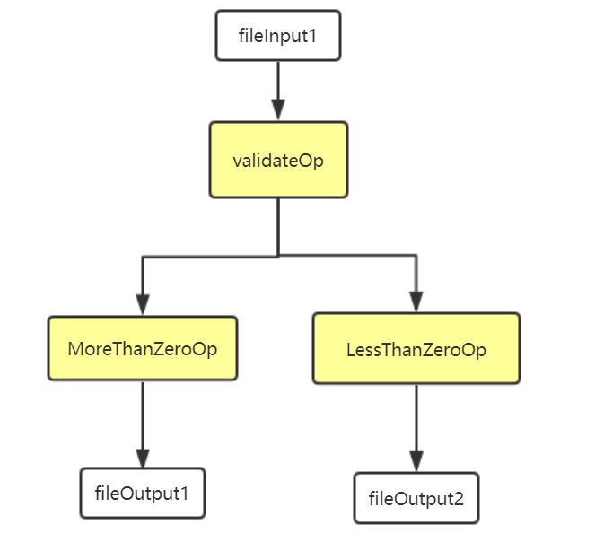

kubeflow pipelines--实现自己的实例
上篇文章实现了运行系统给出的pipelines实例。通过挂载自己的卷，以及使用自己的镜像总算可以运行官方给的ML实例了。但是我们的最终目的是运行自己的ML程序。
接下来是实现自己的pipelines实例。
根据官方文档的建议：
实现自己的ML实例，总共有两点：
（1）Client code （在kubeflow上运行你真正任务所需要的额外代码）
（2）Runtime code （真正的ML代码，其实就是镜像）
接下来用我设置的一个自定义实例来说明：

说明：这里我自定义了一个任务。任务很简单：
（1）先验证一个文件(FileInput1)中的数是否大于0. 将大于0，和小于0的数保存为俩个文件。
（2）对俩个文件执行不同的操作，保存大于0的文件，将里面所有的数全加起来，然后输出（fileoutput1）
(3) 对小于0的那个文件，将里面的数平方。
eg：
如果FileInput1文件中的数是：0，-1，-2，-3 ，4，5，6
那么最后fileOutput1文件中的数为：15
fileOutput2文件中的数为：1，4，9
（不用纠结这个例子，主要是为了能了解如何在pipelines上写自己的实例并运行。）
步骤1 - 准备Runtime code （其实就是镜像）
可以看出来这里总共三个节点：validateOp,MoreThanZeroOp和LessThanZeroOp
三个节点的代码如下：
validate.py （validateOp）
import argparse
import os
def validate(output_dir,filename):
f = open(filename, 'rb+')
lessOutput_path = os.path.join(output_dir, 'lessThanZero.txt')
f1 = open(lessOutput_path, 'w')
moreOutput_path = os.path.join(output_dir, 'moreThanZero.txt')
f2 = open(moreOutput_path, 'w')
lines = f.readlines()
for line in lines:
num = int(line)
if num > 0:
f1.write(str(num) + "\n")
elif num < 0:
f2.write(str(num) + "\n")
f.close()
f1.close()
f2.close()
with open('/lessFilePath.txt', 'w+') as f:
f.write(lessOutput_path)
with open('/moreFilePath.txt', 'w+') as f:
f.write(moreOutput_path)
def parse_arguments():
"""Parse command line arguments."""
parser = argparse.ArgumentParser()
parser.add_argument( '--inputFilename',type=str,required=True,help='local file to be input')
parser.add_argument('--output_dir',type=str,required=True,help='local file to be input')
args = parser.parse_args()
return args
def main():
args = parse_arguments()
validate(args.output_dir,args.inputFilename)
if __name__ == '__main__':
main()
MoreThanZero.py （MoreThanZeroOp）
import argparse
import os
def MoreThanZero(output_dir,filename):
f = open(filename, 'rb+')
output_path=os.path.join(output_dir, 'sum.txt')
f1 = open(output_path,'w')
lines = f.readlines()
sum = 0
for line in lines:
sum += int(line)
f1.write(str(sum) + "\n")
f.close()
f1.close()
def parse_arguments():
"""Parse command line arguments."""
parser = argparse.ArgumentParser()
parser.add_argument( '--output_dir',type=str,required=True,help='local file to be input')
parser.add_argument('--data',type=str,required=True,help='local file to be input')
args = parser.parse_args()
return args
def main():
args = parse_arguments()
MoreThanZero(args.output_dir,args.data)
if __name__ == '__main__':
main()
LessThanZero.py （MoreThanZeroOp）
import argparse
import os
def LessThanZero(output_dir,filename):
f = open(filename, 'rb+')
output_path=os.path.join(output_dir, 'square.txt')
f1 = open(output_path,'w')
lines = f.readlines()
for line in lines:
sum = int(line) * int(line)
f1.write(str(sum) + "\n")
f.close()
f1.close()
def parse_arguments():
"""Parse command line arguments."""
parser = argparse.ArgumentParser()
parser.add_argument( '--output_dir',type=str,required=True,help='local file to be input')
parser.add_argument('--data',type=str,required=True, help='local file to be input')
args = parser.parse_args()
return args
def main():
args = parse_arguments()
LessThanZero(args.output_dir,args.data)
if __name__ == '__main__':
main()
接下来要将这些py打包成自己的任务镜像，拿Validate.py为例。 dockerfile
FROM python:3.6-slim
RUN mkdir -p /app
ENV APP_HOME /app
COPY src $APP_HOME
WORKDIR $APP_HOME
ENTRYPOINT ["python", "validate.py"]
这里我将上面的三个py分别打包成以下镜像：
192.168.14.54:5000/user-validate:v8
192.168.14.54:5000/user-morethanzero:v8
192.168.14.54:5000/user-lessthanzero:v8
到这里第一步（RunTime code）就完成了
步骤2-准备client code （实际就是在kubeflow pipelines上运行自己的实例）
打开jupyter(参考前面的文章)
输入client.py文件内容即可
（1）
import kfp
from kfp import compiler
import kfp.dsl as dsl
import kfp.notebook
import kfp.gcp as gcp
client = kfp.Client()
from kubernetes import client as k8s_client
EXPERIMENT_NAME = 'usr1'
exp = client.create_experiment(name=EXPERIMENT_NAME)
（2）
class validateOp(dsl.ContainerOp):
"""对文件中的数据进行验证"""
def __init__(self, output_dir,inputFilename):
super(validateOp, self).__init__(
name='validate_number',
image='192.168.14.54:5000/user-validate:v8',
arguments = [
'--inputFilename', inputFilename,
'--output_dir', output_dir,
],
file_outputs={
'more': '/moreFilePath.txt',
'less': '/lessFilePath.txt',
})
class MoreThanZeroOp(dsl.ContainerOp):
"""handle the number more than zero"""
def __init__(self,output_dir,data):
super(MoreThanZeroOp, self).__init__(
name='MoreThanZero',
image='192.168.14.54:5000/user-morethanzero:v8',
arguments = [
'--output_dir',output_dir,
'--data', data,
])
class LessThanZeroOp(dsl.ContainerOp):
"""handle the number less than zero"""
def __init__(self,output_dir,data):
super(LessThanZeroOp, self).__init__(
name='LessThanZero',
image='192.168.14.54:5000/user-lessthanzero:v8',
arguments = [
'--output_dir',output_dir,
'--data', data,
])
@dsl.pipeline(
name='Testpipelines',
description='shows how to define dsl.Condition.'
)
def ValidateTest():
output_dir = '/nfs-pv/usr-pv'
inputFilename = 'a.txt'
validate = validateOp(output_dir,inputFilename).add_volume(k8s_client.V1Volume(name='usr-pv',nfs=k8s_client.V1NFSVolumeSource(path= '/nfs-pv/usr-pv',server='192.168.14.54'))).add_volume_mount(k8s_client.V1VolumeMount(mount_path='/nfs-pv/usr-pv',name='usr-pv'))
moreThanZero = MoreThanZeroOp(output_dir,validate.outputs['more']).add_volume(k8s_client.V1Volume(name='usr-pv',nfs=k8s_client. V1NFSVolumeSource(path='/nfs-pv/usr-pv',server='192.168.14.54'))).add_volume_mount(k8s_client.V1VolumeMount(mount_path='/nfs-pv/usr-pv',name='usr-pv'))
lessThanZero = LessThanZeroOp(output_dir,validate.outputs['less']).add_volume(k8s_client.V1Volume(name='usr-pv',nfs=k8s_client. V1NFSVolumeSource(path='/nfs-pv/usr-pv',server='192.168.14.54'))).add_volume_mount(k8s_client.V1VolumeMount(mount_path='/nfs-pv/usr-pv',name='usr-pv'))
（3）# Submit a run.
compiler.Compiler().compile(ValidateTest, 'test.tar.gz')
run = client.run_pipeline(exp.id, 'usr', 'test.tar.gz')
这里要注意的是，我自己建立一个共享存储卷（NFS）。这样我们将输入文件（a.txt）放入这个存储卷下面，容器可以直接去拿，并且最后产生的输出文件会保留在 存储卷里，不会因为任务完成了，容器就消失了，找不到文件。所以，上面的client.py 内容要根据自己的情况修改。